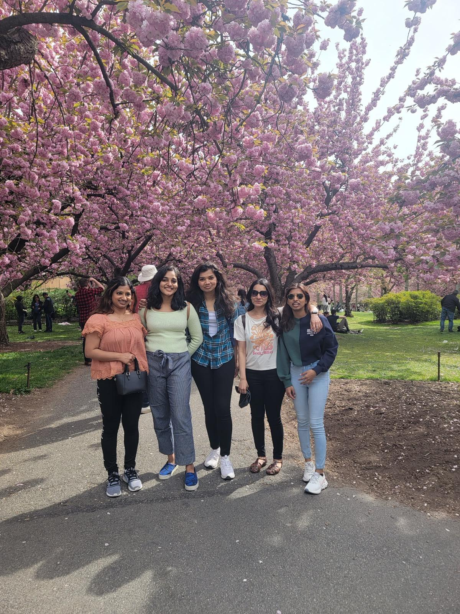
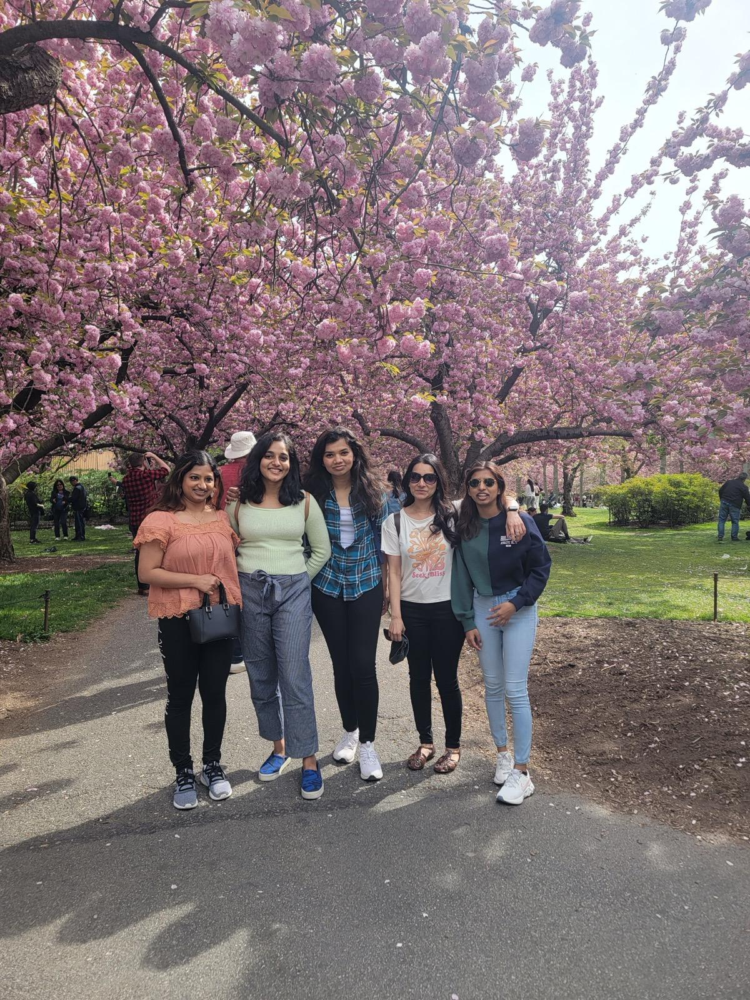

✨ Sharing our best memories on your special day ✨
Reconnecting with Christy in 2021 and meeting you all at Queens in 2022 ü•Ç
I still remember you introducing Mark at a traffic intersection near your home, our drive to Brooklyn, going to Edge, Long Island, temple canteen food and having a blast eating all the amazing food your mom prepared.
Our Comedy Timing, Tamil movie references, gossips and endless talking till 3 am (Christy's shhh shhh) with same energy... such wonderful memories. Its like meeting a twin
 

üéâ Movies
Well from watching Varisu together at Boston to explaining vadachennai to rewatching Thiruchitrambalam at NYC - It is a journey of laughter üòÇ
6 am Starbucks coffee run with Mark and Catherine
Who else would join me for a 6am coffee run other than Mark thanks to Mark for slowly pursuing you to be a morning person :)
Boston Trips - Empty Prudential :P, Encore, Boston tea party, Kunafe and Pudding at Istanbul diner cafe

Marks Parents Hosting
Going to Semma, Louis Vuitton
Roasting Christy
Playing boardgames
üíç My favorite pictures of the couple